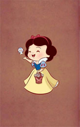

ABOUT
TECHNOLOGE
This is about technologe.
Some thing
700
3.2
CSS
You are beautiful
What
I don't know what I do now is right, those are wrong, and when I finally die then I know these. So what I can do now is to try to do everything well, and then wait to die .Sometimes I can be very happy to talk to everyone, can be very presumptuous, but no one knows, it is but very deliberately camouflage, camouflage; I can make him very happy very happy.
When
If not to the sun for smiling, warm is still in the sun there, but wewill laugh more confident calm; if turned to found his own shadow, appropriate escape, the sun will be through the heart,warm each place behind the corner; if an outstretched palm cannot fall butterfly, then clenched waving arms, given power; if I can't have bright smile.
How
Sometimes when we don't want to work, sometimes will suddenlywant to drink, sometimes you want to travel alone, sometimes you want to get married.
What----------40%
What----------30%
What----------30%
前端技术领域
前端开发工程师,主要职责是利用各种Web技术进行客户端产品的开发.完成客户端程序(也就是浏览器端)的开发,开发JavaScript,同时结合后台开发技术模拟整体效果,进行丰富互联网的Web开发,致力于通过技术改善用户体验.
网页不再只是承载单一的文字和图片，各种富媒体让网页的内容更加生动，网页上软件化的交互形式为用户提供了更好的使用体验，这些都是基于前端技术实现的。无论是开发难度上，还是开发方式上，现在的网页制作都更接近传统的网站后台开发，所以现在不再叫网页制作，而是叫Web前端开发。Web前端开发在产品开发环节中的作用变得越来越重要，而且需要专业的前端工程师才能做好，这方面的专业人才近几年来备受青睐。Web前端开发是一项很特殊的工作，涵盖的知识面非常广，既有具体的技术，又有抽象的理念。简单地说，它的主要职能就是把网站的界面更好地呈现给用户。